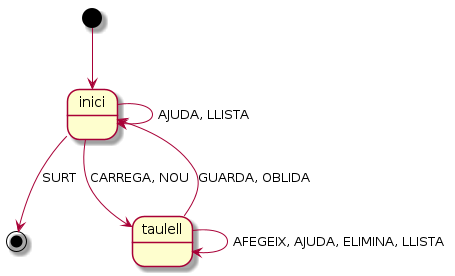

Enfonsar la flota¶
Posem a treballar tot el que hem aprés fins ara, desenvolupant un joc: enfonsa la flota
Probablement ja coneguis aquest joc. Es presenta un taulell que conté vaixells amagats, i has d’anar dient coordenades fins que descobreixes tots els vaixells.
Normalment, aquest joc es desenvolupa per dos o més jugadors però nosaltres farem una primera versió simplificada. Pots trobar una versió menys simplificada aqui.
El programa es basa en tres conceptes bàsics: el taulell , la coordenada i el vaixell.
Un taulell és una taula o matriu de dos dimensions nXm. Tant n com m han de ser més grans que 0.
Cada posició de la taula és un valor entre el 0 i el 9, on
0: no vaixell o aigua1a9: vaixell de la longitud indicada.
Les cel·les de valor 0 es diuen aigua mentre que la resta són vaixell amb una longitud exactament igual a la longitud indicada pel seu valor.
Les cel·les corresponents a un vaixell apareixen consecutives en la mateixa fila o en la mateixa columna.
Els límits del taulell són també límits dels vaixells. És a dir, el taulell no és esfèric.
Per que un taulell sigui vàlid:
ha de correspondre a un rectangle ben format, en el sentit què totes les files presenten el mateix nombre de columnes.
ha d’haver-hi com a mínim un vaixell.
un vaixell no pot tocar a un altre. És a dir, dues cel·les de vaixells diferents, no poden ser consecutives. Es consideren consecutives quan és troben a la cel·la anterior o posterior en la mateixa fila o columna, però no diagonal.
Exemple vàlid amb taulell 3x6:
· 0 1 2 3 4 5 __ __ __ __ __ __ 0 1 . 2 2 . . 0 1 . 1 . . 2 2 1 2 . . 2 2 . . 2 __ __ __ __ __ __ 0 1 2 3 4 5Aquí molts dels vaixells semblen tocar-se, però ho fan només per la seva diagonal. Per exemple el vaixell
(0, 2:3)està separat per aigua del vaixell(0, 0), només toca en diagonal amb els vaixells de la fila 2, i no toca amb el vaixell(2, 2:3)perquè el taulell no és esfèric.Exemple no vàlid amb taulell 2x4:
· 0 1 2 3 __ __ __ __ 0 2 3 3 3 0 1 2 . . 1 1 __ __ __ __ 0 1 2 3Aquí, el vaixell
(0, 1:3)és adjacent als vaixells(0:1, 0)i(1, 3).
Les coordenades es representen amb un parell de números enters entre
parèntesis i separats per coma. El primer valor correspon al número de la
fila i el segon al de la columna. Així, (0, 1) correspon a la primera
fila i segona columna,
Per simplificar l’exercici, les files i columnes seran com a màxim 99.
Per descriure els vaixells, fem servir la mateixa notació que per indicar
les coordenades, excepte que, allà on hi ha la dimensió en que s’estén el
vaixell, ho indicarem en forma de rang. Per exemple, si el vaixell es
desplega de manera horitzontal entre les coordenades (1, 5) i (1,
7), sabem que la seva longitud és de 3 i el representarem com (1,
5:7). Per contra, si el vaixell està posicionat de manera vertical al
taulell, per exemple, entre les posicions (3, 5) i (6, 5), el
podrem representar com (3:6, 5).
En el cas que un vaixell tingui llargària 1, la seva representació coincideix amb la d’una coordenada. El context determinarà si és una cosa o una altra.
Constructor de taulells¶
En primer lloc, ens caldrà desenvolupar un programa que ens permeti construir taulells.
El programa es dirà ConstructorTaulell.java i funcionarà de manera
interactiva, oferint un prompt.
En arrencar, el programa oferirà un missatge presentant la seva funció i el prompt per demanar una comanda per part de la usuària.
Les comandes acceptades seran, sense distingir majúscules de minúscules:
AJUDA: el programa mostra un text d’ajuda amb les diferents comandes disponibles.AFEGEIX: es vol afegir un nou vaixell al taulell.Si no hi ha un taulell en construcció (estat inicial), es mostra el missatge d’error
No hi ha cap taulell. Considereu les opcions NOU o CARREGA.Si sí hi ha un taulell, el programa demana la descripció del vaixell. Recorda que un vaixell es descriu amb una coordenada amb possible rang en una de les dimensions. Ex.
(5:7, 1)correspon a un vaixell de longitud 3, col·locat de manera vertical a la columna 1, entre les files 5 i 7.Si el vaixell està malament descrit, o no pot ser col·locat al lloc indicat perquè no hi cap o bé perquè toca un altre vaixell, es mostra el missatge d’error
Vaixell no vàlid.Si el vaixell ha estat descrit correctament i, en col·locar-lo al taulell actual, el taulell es manté vàlid, llavors el programa l’afegeix al taulell.
En cas que tot hagi anat bé, el programa ho indicarà amb el missatge
Fet!CARREGA: es vol carregar un taulell guardat previament.Aquesta opció només és vàlida quan no hi ha un taulell en construcció. Si hi és, es mostra el missatge d’error
Ja hi ha un taulell. Considereu les opcions GUARDA o OBLIDA.Si no hi ha cap vaixell en construcció, demana el nom d’un vaixell.
Si el nom del taulell no està a la llista de vaixells disponibles, es mostra l’error
Taulell desconegut. Considereu l'opció LLISTA.El nom del taulell correspon a un fitxer que conté les dades d’un taulell prèviament guardades per aquest programa.
Si el taulell és conegut, s’intenta carregar.
Si el contingut del taulell no és vàlid es mostra el missatge
Contingut no vàlid. Això no hauria de passar amb els fitxers que hagi guardat aquesta aplicació, però ho comprovem per el fitxer ha estat alterat amb altres mitjans.Si el contingut és vàlid, el taulell és carregat i es mostra el missatge
Fet!.ELIMINA: es vol eliminar un vaixell del taulell.Aquesta opció només és vàlida quan hi ha un taulell en construcció. Altrament es mostra el missatge
No hi ha cap taulell. Considereu les opcions NOU o CARREGA.Si sí hi ha un taulell, el programa demana la descripció del vaixell.
Si el vaixell està malament descrit, o no es troba al taulell es mostra el missatge d’error
Vaixell no vàlid.Si el vaixell ha estat descrit correctament i es troba al taulell, llavors el programa l’elimina del taulell.
En cas que tot hagi anat bé, el programa ho indicarà amb el missatge
Fet!GUARDA: es vol guardar el taulell en construcció.Aquesta opció només és vàlida quan hi ha un taulell en construcció. Altrament es mostra el missatge
No hi ha cap taulell. Considereu les opcions NOU o CARREGA.En cas que el taulell encara no tingui cap vaixell, mostrarà el missatge
El taulell en construcció no té cap vaixell. Considereu AFEGEIX.Si hi ha un taulell en construcció amb un o més vaixells, es demana un nom pel taulell.
Si el nom del taulell existeix, es sobreescriu el seu contingut amb el del taulell actual. Atenció: això és una simplificació. Normalment hem de fer que els nostres programes demanin confirmació abans de realitzar accions que puguin fer perdre informació.
Si el nom del taulell no existeix, es crea un de nou i s’hi guarda el contingut del taulell actual.
En cas que tot hagi anat bé, el programa ho indicarà amb el missatge
Fet!.LLISTA: es vol veure la llista dels taulells guardats.Aquesta opció és vàlida amb i sense taulell en construcció.
El programa mostra la llista dels noms dels taulells guardats.
Si no n’hi ha cap, ho indica amb el missatge
Cap vaixell guardat.NOU: es vol crear un nou taulell.Aquesta opció només és vàlida quan no hi ha un taulell en construcció. Si hi és, es mostra el missatge d’error
Ja hi ha un taulell. Considereu les opcions GUARDA o OBLIDA.En cas que no hi hagi cap taulell en construcció, el programa demanarà les dimensions del taulell: dos enters indicant el nombre de files i de columnes.
Tant el nombre de files, com el de columnes han de ser valors numèrics enters entre el 1 i el 99.
Si s’introdueix un valor erroni, es mostrarà l’error
Cal un enter entre 1 i 99.Si tot ha anat bé, el programa crearà un taulell amb les dimensions indicades i l’omplirà del valor aigua. Finalment indicarà
Fet!.MOSTRA: és vol veure el contingut del taulell en construcció.Aquesta opció només és vàlida quan hi ha un taulell en construcció. Altrament es mostra el missatge
No hi ha cap taulell. Considereu les opcions NOU o CARREGA.Altrament, el programa mostrarà una representació del taulell. Per exemple, en cas que el taulell demanat sigui de 10x28, i hi hagi un vaixell
(2:3, 3), es mostrarà:· 0 1 2 3 4 5 6 7 8 9 10 11 12 13 14 15 16 17 18 19 20 21 22 23 24 25 26 27 __ __ __ __ __ __ __ __ __ __ __ __ __ __ __ __ __ __ __ __ __ __ __ __ __ __ __ __ 0 . . . . . . . . . . . . . . . . . . . . . . . . . . . . 0 1 . . . . . . . . . . . . . . . . . . . . . . . . . . . . 1 2 . . . 2 . . . . . . . . . . . . . . . . . . . . . . . . 2 3 . . . 2 . . . . . . . . . . . . . . . . . . . . . . . . 3 4 . . . . . . . . . . . . . . . . . . . . . . . . . . . . 4 5 . . . . . . . . . . . . . . . . . . . . . . . . . . . . 5 6 . . . . . . . . . . . . . . . . . . . . . . . . . . . . 6 7 . . . . . . . . . . . . . . . . . . . . . . . . . . . . 7 8 . . . . . . . . . . . . . . . . . . . . . . . . . . . . 8 9 . . . . . . . . . . . . . . . . . . . . . . . . . . . . 9 __ __ __ __ __ __ __ __ __ __ __ __ __ __ __ __ __ __ __ __ __ __ __ __ __ __ __ __ 0 1 2 3 4 5 6 7 8 9 10 11 12 13 14 15 16 17 18 19 20 21 22 23 24 25 26 27Malgrat el taulell pot arribar a ser molt gran per ser representat en una pantalla amb comoditat, en aquesta primera versió del programa no s’exigeix gestionar paginació
OBLIDA: es vol ignorar el taulell en construcció sense guardar cap canvi.Aquesta opció només és vàlida quan hi ha un taulell en construcció. Altrament es mostra el missatge
No hi ha cap taulell. Considereu les opcions NOU o CARREGA.En cas que sí hi hagi, el taulell en construcció és oblidat i es deixa de tenir taulell de construcció. En aquest cas, el programa confirmarà amb l’habitual missatge
Fet!.SURT: es vol finalitzar l’execució de l’aplicació.Aquesta opció pot ser executada només quan no tenim taulell en construcció. En cas que sí el tenim, es recomanarà abans der
GUARDAoOBLIDA.En cas que no el tinguem, el programa finalitzarà l’execució amb el seu habitual missatge
Fet!.
En cas que s’introdueixi una altra comanda, el programa respondrà amb el
missatge Comanda desconeguda.
El comportament del programa es pot representar amb el següent diagrama d’estats:

El joc¶
El joc serà implementat amb el programa Flota.java
El funcionament del joc és el següent:
En arrencar el programa, carrega el taulell contingut a un fitxer, a partir del nom del taulell segons s’hagi definit a
ConstructorTaulell. El nom del taulell és proporcionat com a argument de línia de comandes.De no trobar-se el taulell amb aquest nom, finalitza execució amb un missatge d’error.
El programa valida que el contingut del fitxer sigui correcte. De no ser-ho, finalitza execució amb un missatge d’error.
D’estar tot correcte, el programa mostra el mapa del taulell on, inicialment totes les cel·les apareixen amb el valor ocult sota un símbol d’interrogació. Com a ajuda, al voltant dels valors del taulell, apareixeran els noms de la fila/la columna corresponent.
Per exemple, si el taulell és 10x28, la seva representació inicial serà:
· 0 1 2 3 4 5 6 7 8 9 10 11 12 13 14 15 16 17 18 19 20 21 22 23 24 25 26 27 __ __ __ __ __ __ __ __ __ __ __ __ __ __ __ __ __ __ __ __ __ __ __ __ __ __ __ __ 0 ? ? ? ? ? ? ? ? ? ? ? ? ? ? ? ? ? ? ? ? ? ? ? ? ? ? ? ? 0 1 ? ? ? ? ? ? ? ? ? ? ? ? ? ? ? ? ? ? ? ? ? ? ? ? ? ? ? ? 1 2 ? ? ? ? ? ? ? ? ? ? ? ? ? ? ? ? ? ? ? ? ? ? ? ? ? ? ? ? 2 3 ? ? ? ? ? ? ? ? ? ? ? ? ? ? ? ? ? ? ? ? ? ? ? ? ? ? ? ? 3 4 ? ? ? ? ? ? ? ? ? ? ? ? ? ? ? ? ? ? ? ? ? ? ? ? ? ? ? ? 4 5 ? ? ? ? ? ? ? ? ? ? ? ? ? ? ? ? ? ? ? ? ? ? ? ? ? ? ? ? 5 6 ? ? ? ? ? ? ? ? ? ? ? ? ? ? ? ? ? ? ? ? ? ? ? ? ? ? ? ? 6 7 ? ? ? ? ? ? ? ? ? ? ? ? ? ? ? ? ? ? ? ? ? ? ? ? ? ? ? ? 7 8 ? ? ? ? ? ? ? ? ? ? ? ? ? ? ? ? ? ? ? ? ? ? ? ? ? ? ? ? 8 9 ? ? ? ? ? ? ? ? ? ? ? ? ? ? ? ? ? ? ? ? ? ? ? ? ? ? ? ? 9 __ __ __ __ __ __ __ __ __ __ __ __ __ __ __ __ __ __ __ __ __ __ __ __ __ __ __ __ 0 1 2 3 4 5 6 7 8 9 10 11 12 13 14 15 16 17 18 19 20 21 22 23 24 25 26 27un cop representat el taulell, se li demanarà a la jugadora que introdueixi una comanda amb un prompt.
Les comandes acceptades, sense distinció de majúscules/minúscules, són:
SURT: la jugadora abandona la partida. El programa finalitza amb el missatge «JO GUANYO!».SOLUCIONA: la jugadora abandona la partida però vol veure el taulell. El programa finalitza tot mostrant el taulell sense cap posició oculta i el missatge «JO GUANYO!».AJUDA: el programa mostra un text d’ajuda on descriu les comandes acceptades.una coordenada ben definida la jugadora introdueix una coordenada ben definida. És a dir, un string de la forma
(n, m)onnimsón valors enters entre el 0 i el 99.El programa respon depenent de les següents condicions:
Si és una posició fora del taulell, el programa respon amb un missatge que invita a la jugadora a estar més atenta. Per exemple, «DESPERTA!»
Si és una cel·la ja destapada, el programa respon amb un missatge que invita la jugadora a estar més atenta.
Si és una cel·la que contenia aigua, el programa respondrà «AIGUA» i mostrarà el mapa del taulell amb la cel·la destapada.
Si és una cel·la que contenia un vaixell i encara queden parts del vaixell sense destapar, el programa respondrà amb «TOCAT» i mostrarà el mapa del taulell amb la cel·la destapada.
Si la cel·la destapada finalitza un vaixell, el programa respondrà amb «TOCAT I ENFONSAT», i:
Si en finalitzar un vaixell, encara queden vaixells per destapar, mostrarà el mapa del taulell amb la cel·la destapada.
Si era el darrer vaixell no destapat al taulell, mostrarà tot el taulell destapat i el missatge «TU GUANYES!». Amb això el programa finalitza.
qualsevol altra cosa: la jugadora ha introduït una comanda desconeguda o una coordenada malament definida. El programa li mostra un missatge d’error i continua l’execució.
Altres detalls importants¶
Algunes aclaracions i pistes.
Representació interna¶
Hi ha moltes maneres de representar internament els taulells. Per simplicitat, et proposo que facis servir una taula de caracters tant en fitxer com en memòria.
Com interpretar les descripcions dels vaixells?¶
Et caldrà fer un conjunt de funcions que permetin interpretar un string amb l’especificació d’un vaixell. Considera implementar les següents funcions:
// retorna true si descripció correspon a una descripció de vaixell
// vàlida
// Són descripcions vàlides: (f, c), (f1:f2, c) i (f, c1:c2)
// on f, f1, f2, c, c1 i c2 són enters entre 0 i 99
static boolean esDescripcioDeVaixellValida(String descripcio) {}
// retorna true si el vaixell està posicionat de manera horitzontal
// Si la descripció no és vàlida per un vaixell, retorna false
static boolean esVaixellHoritzontal(String descripcio) {}
// retorna la longitud del vaixell, -1 si no és una descripció vàlida
static boolean longitudVaixell(String descripció) {}
// retorna la primera fila del vaixell descrit, -1 si no és una
// descripció vàlida
// Exemple: "(1:2, 3)" retorna 1. "(5, 4:2)" retorna 5
static int primeraFilaVaixell(String descripcio) {}
// retorna la darrera fila del vaixell descrit, -1 si no és una
// descripció vàlida
// Exemple: "(1:2, 3)" retorna 2. "(5, 4:2)" retorna 5
static int primeraFilaVaixell(String descripcio) {}
Com saber si un taulell és vàlid?¶
Perquè un taulell sigui vàlid, sabem que ha de tenir com a mínim un vaixell, que els vaixells tinguin la longitud que indiquen amb el seu valor i que no es toquin entre ells en horitzontal.
Una possible manera de comprovar-ho, és crear un nou taulell on anirem marcant les coordenades com visitades o no visitades. Inicialment estaran totes no visitades.
Per cada posició del taulell a validar, mirarem si està marcat com a visitada. Si no és així:
si és aigua, la marquem com a visitada (segur que està bé).
si és vaixell amb valor 1, mirem que la posició següent a la mateixa fila i la següent a la mateixa columna siguin aigua o límit de taulell. Si és així marquem la posició del vaixell i les aigües. Altrament no és vàlid.
si és vaixell amb valor més gran que 1, mirem si la posició següent a la mateixa fila és aigua. Si no ho és, reseguim la fila comptant que hi hagi tantes posicions ocupades de vaixell amb el mateix valor com indiqui el valor, finalitzant amb aigua o límit del taulell. En cas de ser aigua, farem el mateix amb les posteriors files dins la mateixa columna. Recordem marcar com a visitades tant les parts del vaixell com les d’aigua.
Fixa’t que d’aquesta manera només hem de recorrer el taulell d’esquerra a dreta i de dalt a baix, i mirar només la columna o la fila següent, doncs les anteriors segur que estaven bé.
Nom dels fitxers¶
Els noms dels fitxers
podrien correspondre amb el nom del taulell indicat per la constructora
(en minúscules), amb l’extensió .taulell i podrien estar guardats en
un mateix directori (ex. taulells/.
Tot plegat, simplificaria molt la seva gestió. En tot cas, com en tants altres detalls d’implementació d’aquest exercici, la decisió és teva.
Esborrar pantalla¶
Flota.javafarà més goig si pots esborrar la pantalla.Crea un programa i fes que executi el següent codi que hauria de funcionar-te amb una consola X-linux:
/** * Neteja la finestra de la consola */ static void netejaFinestra() { System.out.print("\033[H\033[2J"); System.out.flush(); }
Reutilització de codi i packages¶
És fàcil que et resulti interessant reaprofitar mòduls que has
desenvolupat a ConstructorTaulell des de Flota o, fins i tot
d’altres d’exercicis previs com TaulesUtils. Per fer-ho, en comptes de
copiar i enganxar funcions, pot simplement assegurar-te que el codi de
totes les classes que t’interessen, es troba a la mateixa carpeta que el
programa que estàs codificant. Llavors, per cridar-les, simplement fes
servir el nom de la classe, seguit de punt, i acabat per la crida habitual
al mòdul corresponent.
Per simplicitat, de moment no defineixis els teus propis packages. Si estàs fent servir una eina que te’ls genera automàticament, assegura’t d’eliminar-los.
Excepcions i orientació a objectes¶
Hi ha molts conceptes que encara no hem treballat de Java. Entre d’altres la orientació a objectes i el mecanisme d’excepcions.
Evita tant com et sigui possible aquests dos temes, doncs no és l’objectiu d’aquesta pràctica. Si per exemple, en obrir un fitxer es produeix una excepció, és acceptable que el teu programa simplement finalitzi amb un missatge d’error gestionat pel Java.
Variables globals¶
Per simplicitat, en comptes d’haver de passar amunt i avall els taulells i altres variables, et proposo que les declaris amb àmbit global dins la classe. Per exemple:
class LaClasse {
static int laVariable = 42;
static void elModul() {
System.out.println(laVariable); // aquí tinc accés a laVariable
}
public static void main(String[] args) {
System.out.println(laVariable); // aquí tinc accés a laVariable
}
}
Confirmacions¶
Normalment cal demanar confirmació als nostres usuaris quan estem a punt
de realitzar una acció que farà perdre informació sense posibilitat de
recuperar-la. Per exemple, l’opció OBLIDA o GUARDA en cas
d’existir el taulell on es guardarà.
Per simplicitat de codi, aquesta versió no requereix cap confirmació. Evidentment tu pots decidir afegir-la.
Control de versions¶
És molt important que realitzis un control de versions durant el desenvolupament d’aquesta pràctica, doncs forma part de l’avaluació.
Si has de treballar tu sola/sol, guarda el teu exercici com a
06_06_flota/ al teu repositori de l’assignatura.
En cas que el desenvolupis conjuntament amb una altra companya o company,
és preferible que creeu un nou repositori on treballar conjuntament. Feu
les mateixes passes que vau realitzar per construir el
que feu servir en aquesta assignatura. Aquest cop, però, hi serem un/una
més al repositori. Tot i que el repositori estarà dedicat a aquest
exercici, incloeu tot el desenvolupament dins de la carpeta
06_06_flota/.
Aquesta experiència de treballar conjuntament sobre el mateix repositori ja és, en sí, molt enriquidora. Demaneu ajut quan apareguin dificultats.
Assegureu-vos que incloeu el nom de tots els autors/autores a la capçalera de cada fitxer.
No oblidis, després de cada canvi significatiu, fer un commit!
Recorda que aquí l’objectiu no és l’eficiència en la producció de codi sinó l’eficiència en l’aprenentatge.
Com començar-ho tot plegat?¶
Probablement el punt més difícil és començar a fer el programa. Et proposo el següent:
si has de treballar per parelles, creeu el nou repositori privat, convideu-me i prepareu el vostre entorn local. Potser voldreu fer alguna prova tot editant per separat el fitxer
readme.creat un fitxer amb el nom del programa i defineix una bona capçalera. Pots fer servir inicialment el text d’aquest enunciat, però de seguida, intenta desglossar-lo en una llista d’elements petits. Per exemple:
oferir missatge presentant la funció del programa
mostrar prompt
recollir comanda
mostrar ajuda
crear nou taulell
…
fes una o més simulacions de diferents execucions. La primera potser podria ser simplement:
$ java ConstructorTaulell Benvingut, benvinguda al programa de construcció de taulells pel joc d'enfonsar la flota. Per demanar ajuda, simplement tecleja AJUDA > SURT Adéu
Un cop tinguis la primera, podries ja generar el primer programa que sigui capaç de passar la prova.
És molt recomenable que facis servir fitxers d’entrada/sortida a l’estil dels que hem estat fent servir durant tot el curs. Si et cal, demana ajuda per adaptar el programa
test/test.sha les necessitats del teu projecte.Per la majoria de nosaltres, resulta més fàcil abordar els problemes, tot simplificant-los inicialment, per després anar-los completant de manera incremental.
Per exemple, probablement sigui més adequat mostrar inicialment els valors dels taulells sense indicar els números de files ni de columnes. Tot seguit pots mirar de posar les files a una banda, després a les dues, després els noms de columna…
quan tinguis clar que has de crear un mòdul, defineix amb precisió el seu objectiu. En cas que et sigui possible, defineix una mena de doctest o, si t’atreveixes, un junit test! No tinguis problemes per demanar suport. El teu profe estarà més que content d’ajudar-te!
Finalment recorda: no estàs sola/sol desenvolupant. Està molt bé fer coses per la teva banda, però també aprendre a fer consultes de com resoldre un problema que no et surt o, fins i tot, demanar assessorament quan el codi que has generat no t’acaba de convèncer.